10k 1:1 Mixture of Raji and Jurkat Cells Multiplexed#
Dataset: 10k 1:1 Mixture of Raji and Jurkat Cells Multiplexed, 2 CMOs
The detailed description of this dataset can be found here.
Preparation#
Download fastq files.
$ wget https://s3-us-west-2.amazonaws.com/10x.files/samples/cell-exp/6.0.0/SC3_v3_NextGem_DI_CellPlex_Jurkat_Raji_10K_Multiplex/SC3_v3_NextGem_DI_CellPlex_Jurkat_Raji_10K_Multiplex_fastqs.tar
$ tar xvf SC3_v3_NextGem_DI_CellPlex_Jurkat_Raji_10K_Multiplex_fastqs.tar
Combine reads of different lanes.
$ cat SC3_v3_NextGem_DI_CellPlex_Jurkat_Raji_10K/SC3_v3_NextGem_DI_CellPlex_Jurkat_Raji_10K_?_multiplexing_capture/SC3_v3_NextGem_DI_CellPlex_Jurkat_Raji_10K_?_multiplexing_capture_S1_L00?_R1_001.fastq.gz > SC3_v3_NextGem_DI_CellPlex_Jurkat_Raji_10K_1_multiplexing_capture_S1_combined_R1_001.fastq.gz
$ cat SC3_v3_NextGem_DI_CellPlex_Jurkat_Raji_10K/SC3_v3_NextGem_DI_CellPlex_Jurkat_Raji_10K_?_multiplexing_capture/SC3_v3_NextGem_DI_CellPlex_Jurkat_Raji_10K_?_multiplexing_capture_S1_L00?_R2_001.fastq.gz > SC3_v3_NextGem_DI_CellPlex_Jurkat_Raji_10K_1_multiplexing_capture_S1_combined_R2_001.fastq.gz
Download cell barcode info. These are the cell-associated barcodes in this single cell RNA-Seq library (determined by the number of transcriptomic UMIs captured per barcode).
$ wget https://cf.10xgenomics.com/samples/cell-exp/6.0.0/SC3_v3_NextGem_DI_CellPlex_Jurkat_Raji_10K_Multiplex/SC3_v3_NextGem_DI_CellPlex_Jurkat_Raji_10K_Multiplex_multiplexing_analysis_assignment_confidence_table.csv
$ cut -d ',' -f4 SC3_v3_NextGem_DI_CellPlex_Jurkat_Raji_10K_Multiplex_multiplexing_analysis_assignment_confidence_table.csv | sed 's/-1//g' > cell_barcodes.txt
Inspect cell barcodes.
$ head cell_barcodes.txt
AAACCCAAGAGTGTGC
AAACCCAAGATGCTTC
AAACCCAAGGTACAGC
AAACCCAAGTAGCTCT
AAACCCACACGGATCC
AAACCCACAGACCCGT
AAACCCACATTCCTAT
AAACCCAGTACTCCGG
AAACCCATCATGCGGC
AAACCCATCGACGCTG
Prepare feature barcodes (cell multiplexing oligos, CMOs).
$ wget https://cf.10xgenomics.com/samples/cell-exp/6.0.0/SC3_v3_NextGem_DI_CellPlex_Jurkat_Raji_10K_Multiplex/SC3_v3_NextGem_DI_CellPlex_Jurkat_Raji_10K_Multiplex_count_feature_reference.csv
$ cut -d',' -f1,5 SC3_v3_NextGem_DI_CellPlex_Jurkat_Raji_10K_Multiplex_count_feature_reference.csv | sed 's/,/\t/g' | grep ^C > feature_barcodes.txt
Inspect feature barcodes.
$ cat feature_barcodes.tsv
CMO301 ATGAGGAATTCCTGC
CMO302 CATGCCAATAGAGCG
CMO303 CCGTCGTCCAAGCAT
CMO304 AACGTTAATCACTCA
CMO305 CGCGATATGGTCGGA
CMO306 AAGATGAGGTCTGTG
CMO307 AAGCTCGTTGGAAGA
CMO308 CGGATTCCACATCAT
CMO309 GTTGATCTATAACAG
CMO310 GCAGGAGGTATCAAT
CMO311 GAATCGTGATTCTTC
CMO312 ACATGGTCAACGCTG
QC#
The first 100,000 read pairs are sampled (default, set by -n)
for quality control. The -t option can be used to set the number of
threads. By default, diagnostic results and plots are generated in the
qc directory (set by --output_directory), and the full length of
read 1 and read 2 are searched against reference cell and feature
barcodes, respectively. The per base content of both read pairs and the
distribution of matched barcode positions are summarized. Use -r1_c
and/or -r2_c to limit the search range, and -cb_n and/or
-fb_n to set the mismatch tolerance for cell and/or feature barcode
matching (default 3).
$ fba qc \
-1 ../SC3_v3_NextGem_DI_CellPlex_Jurkat_Raji_10K_1_multiplexing_capture_S1_combined_R1_001.fastq.gz \
-2 ../SC3_v3_NextGem_DI_CellPlex_Jurkat_Raji_10K_1_multiplexing_capture_S1_combined_R2_001.fastq.gz \
-w cell_barcodes.txt \
-f feature_barcodes.tsv \
--output_directory qc \
-r1_c 0,16
This library was constructed using the Chromium Next GEM Single Cell 3ʹ Reagent Kits v3.1 (Dual Index) with Feature Barcode technology for Cell Multiplexing and sequenced on an Illumina NovaSeq 6000. The first 16 bases of read 1 represent cell barcodes, and the following 12 bases represent UMIs. The base content plot indicates that the GC content of cell barcodes is evenly distributed. However, there is a slight T-enrichment in the UMIs.
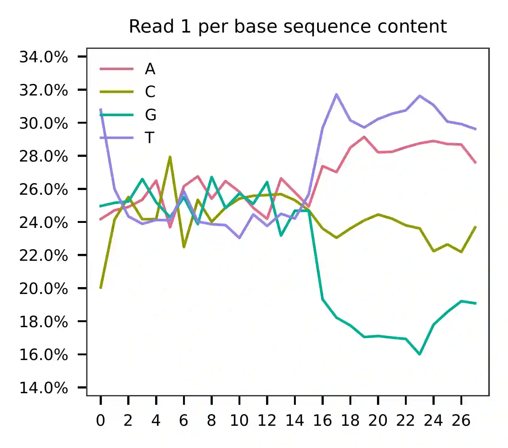{kind=link}
In reference to read 2, the per base content indicates that bases 0-14
represent feature barcodes (CMOs, at 15 bp). Bases 15-36 are constant
and comprise Capture Sequence 2, which can be read with high accuracy
(GCTCACCTATTAGCGGCTAAGG). The succeeding 12 bases represent UMIs,
followed by 16-base cell barcodes. Bases 37-54 correspond to the reverse
complement of read 1. While the CellPlex library is relatively small,
read 2 has also sequenced through a portion of the Nextera Read 1
sequencing primer, which is constant and encompasses bases 55-79. In
actuality, read 1 is unnecessary since read 2 contains all the necessary
information for demultiplexing, including cell barcodes, UMIs, and CMOs.
Theoretically, we can further enhance the accuracy of demultiplexing by
utilizing the cell barcodes and UMIs on both reads to account for PCR
and sequencing errors.
{kind=link}
Most of the reads have the correct structure.
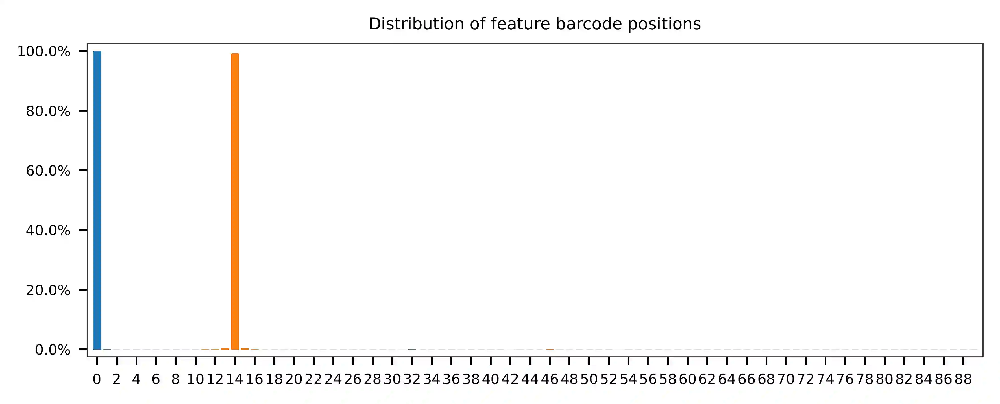{kind=link}
The detailed qc results are stored in
feature_barcoding_output.tsv.gz file. matching_pos columns
indicate the matched positions on reads. matching_description
columns indicate mismatches in substitutions:insertions:deletions
format.
$ gzip -dc qc/feature_barcoding_output.tsv.gz | head
read1_seq cell_barcode cb_matching_pos cb_matching_description read2_seq feature_barcode fb_matching_pos fb_matching_description
AAGCGTTAGAGTCTTTggtatttttatt AAGCGTTAGAAGCCTG 0:15 2:0:1 ATGAGGAATTCCTGCGCTCACCTATTAGCGGCTAAGGAATAAAACTACCAAAGACTCTAACGCTTCTGTCTCTTATACACATCTGACGCT CMO301_ATGAGGAATTCCTGC 0:15 0:0:0
ATCTCTACAACCCACGctttattgttta ATCTCTAGTACCCACG 0:16 2:0:0 ATGAGGAATTCCTGCGCTCACCTATTAGCGGCTAAGGTAAACAATAAAGCGTGGGTTGTAGAGATCTGTCTCTTATACACATCTGACGCT CMO301_ATGAGGAATTCCTGC 0:15 0:0:0
TGCTTCGAGCATGATGttctgagccggt TGCTTCGAGATTGAGT 0:15 2:0:1 CATGCCAATAGAGCGGCTCACCTATTAGCGGCTAAGGACCGGCTCAGAACATCATGCTCGAAGCACTGTCTCTTATACACATCTGACGCT CMO302_CATGCCAATAGAGCG 0:15 0:0:0
CGGGACTGTAGTATAGacctaattttcc CGGGACTGTAAGCAAT 0:14 1:0:2 CATGCCAATAGAGCGGCTCACCTATTAGCGGCTAAGGGGAAAATTAGGTCTATACTACAGTCCCGCTGTCTCTTATACACATCTGACGCT CMO302_CATGCCAATAGAGCG 0:15 0:0:0
TCACTCGCAATTTCGGaacatggacatc TCACTCGCACCATTCC 0:14 1:0:2 ATGAGGAATTCCTGCGCTCACCTATTAGCGGCTAAGGGAAGTCCATGTTCCGAAATTGCGAGTGACTGTCTCTTATACACATCTGACGCT CMO301_ATGAGGAATTCCTGC 0:15 0:0:0
AGTTAGCAGACGTAGTgccttaatttgg AGTTAGCAGAGCATTA 0:14 1:0:2 CATGCCAATAGAGCGGCTCACCTATTAGCGGCTAAGGCCAAATTAAGGCACTACGTCTGCTAACTCTGTCTCTTATACACATCTGACGCT CMO302_CATGCCAATAGAGCG 0:15 0:0:0
GTCCCATTCTAAACGTtgagtacgagcg CATCCCATCCTAAACG 0:15 2:0:1 CATGCCAATAGAGCGGCTCACCTATTAGCGGCTAAGGCGCTCGTACTCAACGTTTAGAATGGGACCTGTCTCTTATACACATCTGACGCT CMO302_CATGCCAATAGAGCG 0:15 0:0:0
CAGAGCCCAATAGGGCcaccctcttaac CAGAGCCGTATAGGGC 0:16 2:0:0 ATGAGGAATTCCTGCGCTCACCTATTAGCGGCTAAGGGTTAAGAGGGTGGCCCTATTGGGCTCTGCTGTCTCTTATACACATCTGACGCT CMO301_ATGAGGAATTCCTGC 0:15 0:0:0
AACCCAATCAGTTGTAggatattcacct AACCCAACAGCATTGT 0:15 0:1:2 ATGAGGAATTCCTGCGCTCACCTATTAGCGGCTAAGGAGGTGAATATCCTACAACTGATTGGGTTCTGTCTCTTATACACATCTGACGCT CMO301_ATGAGGAATTCCTGC 0:15 0:0:0
Barcode extraction#
Both cell and feature barcodes (CMOs) have the same length of 16 and 15,
respectively. The starting and ending positions of these barcodes are
uniformly distributed according to the qc results. The read 1 search
range is set from 0 to 16, while the read 2 search range is set from 0
to 15. There is a tolerance of two mismatches allowed for the cell
barcode and one for the feature barcode (set by -cb_m and
-cf_m). The default setting allows for three ambiguous nucleotides
(Ns) in both read 1 and read 2 (set by -cb_n and -cf_n).
$ fba extract \
-1 ../SC3_v3_NextGem_DI_CellPlex_Jurkat_Raji_10K_1_multiplexing_capture_S1_combined_R1_001.fastq.gz \
-2 ../SC3_v3_NextGem_DI_CellPlex_Jurkat_Raji_10K_1_multiplexing_capture_S1_combined_R2_001.fastq.gz \
-w cell_barcodes.txt \
-f feature_barcodes.tsv \
-o feature_barcoding_output.tsv.gz \
-r1_c 0,16 \
-r2_c 0,15 \
-cb_m 2 \
-fb_m 1 \
-cb_n 3 \
-fb_n 3
Preview of result.
$ gzip -dc feature_barcoding_output.tsv.gz | head
read1_seq cell_barcode cb_num_mismatches read2_seq feature_barcode fb_num_mismatches
AAGCGTTAGAGTCTTTggtatttttatt AAGCGTTTCAGTCTTT 2 ATGAGGAATTCCTGCgctcacctattagcggctaaggaataaaactaccaaagactctaacgcttctgtctcttatacacatctgacgct CMO301_ATGAGGAATTCCTGC 0
ATCTCTACAACCCACGctttattgttta ATCTCTAGTACCCACG 2 ATGAGGAATTCCTGCgctcacctattagcggctaaggtaaacaataaagcgtgggttgtagagatctgtctcttatacacatctgacgct CMO301_ATGAGGAATTCCTGC 0
TCACTCGCAATTTCGGaacatggacatc TCACTCGCAGTTTCAG 2 ATGAGGAATTCCTGCgctcacctattagcggctaagggaagtccatgttccgaaattgcgagtgactgtctcttatacacatctgacgct CMO301_ATGAGGAATTCCTGC 0
CAGAGCCCAATAGGGCcaccctcttaac CAGAGCCGTATAGGGC 2 ATGAGGAATTCCTGCgctcacctattagcggctaagggttaagagggtggccctattgggctctgctgtctcttatacacatctgacgct CMO301_ATGAGGAATTCCTGC 0
TGAGGGACATGCCAATcattttgaattt TGAGGGAGTTGCCAAT 2 ATGAGGAATTCCTGCgctcacctattagcggctaaggaaattcaaaatgattggcatgtccctcactgtctcttatacacatctgacgct CMO301_ATGAGGAATTCCTGC 0
CAGGGCTGTGCATGCCgcttaaacagca CAGGGCTCAGCATGCC 2 ATGAGGAATTCCTGCgctcacctattagcggctaaggtgctgtttaagcggcatgcacagccctgctgtctcttatacacatctgacgct CMO301_ATGAGGAATTCCTGC 0
TCGGGTGTCCGACATGactctagtacat TCGGGTGAGCGACATG 2 ATGAGGAATTCCTGCgctcacctattagcggctaaggatgtactagagtcatgtcggacacccgactgtctcttatacacatctgacgct CMO301_ATGAGGAATTCCTGC 0
TCGAAGTGTCAAAGTAgtaaaaggtacc TCGAAGTCACAAAGTA 2 ATGAGGAATTCCTGCgctcacctattagcggctaagggagaagtcccaatactttgacgctcacctattagcggctaaggggtacctttt CMO301_ATGAGGAATTCCTGC 0
GTCATCCAGTGAGAGGtcagtgacacct GTCATCCAGAGAGCGG 2 ATGAGGAATTCCTGCgctcacctattagcggctaaggaggtgtcactgacctctcactggatgacctgtctcttatacacatctgacgct CMO301_ATGAGGAATTCCTGC 0
Result summary.
63.98% (138,246,914 out of 216,070,514) of total read pairs have valid cell and feature barcodes. Majority of the fragments in this library have the correct structure.
2021-09-30 02:00:26,049 - fba.__main__ - INFO - fba version: 0.0.x
2021-09-30 02:00:26,049 - fba.__main__ - INFO - Initiating logging ...
2021-09-30 02:00:26,049 - fba.__main__ - INFO - Python version: 3.7
2021-09-30 02:00:26,049 - fba.__main__ - INFO - Using extract subcommand ...
2021-09-30 02:00:26,075 - fba.levenshtein - INFO - Number of reference cell barcodes: 13,615
2021-09-30 02:00:26,075 - fba.levenshtein - INFO - Number of reference feature barcodes: 12
2021-09-30 02:00:26,075 - fba.levenshtein - INFO - Read 1 coordinates to search: [0, 16)
2021-09-30 02:00:26,075 - fba.levenshtein - INFO - Read 2 coordinates to search: [0, 15)
2021-09-30 02:00:26,075 - fba.levenshtein - INFO - Cell barcode maximum number of mismatches: 2
2021-09-30 02:00:26,075 - fba.levenshtein - INFO - Feature barcode maximum number of mismatches: 1
2021-09-30 02:00:26,075 - fba.levenshtein - INFO - Read 1 maximum number of N allowed: 3
2021-09-30 02:00:26,075 - fba.levenshtein - INFO - Read 2 maximum number of N allowed: 3
2021-09-30 02:00:29,258 - fba.levenshtein - INFO - Matching ...
2021-09-30 02:16:48,398 - fba.levenshtein - INFO - Read pairs processed: 10,000,000
2021-09-30 02:33:07,679 - fba.levenshtein - INFO - Read pairs processed: 20,000,000
2021-09-30 02:49:32,978 - fba.levenshtein - INFO - Read pairs processed: 30,000,000
2021-09-30 03:05:53,492 - fba.levenshtein - INFO - Read pairs processed: 40,000,000
2021-09-30 03:22:08,512 - fba.levenshtein - INFO - Read pairs processed: 50,000,000
2021-09-30 03:38:20,583 - fba.levenshtein - INFO - Read pairs processed: 60,000,000
2021-09-30 03:54:33,108 - fba.levenshtein - INFO - Read pairs processed: 70,000,000
2021-09-30 04:10:45,824 - fba.levenshtein - INFO - Read pairs processed: 80,000,000
2021-09-30 04:26:57,385 - fba.levenshtein - INFO - Read pairs processed: 90,000,000
2021-09-30 04:43:13,387 - fba.levenshtein - INFO - Read pairs processed: 100,000,000
2021-09-30 04:59:37,730 - fba.levenshtein - INFO - Read pairs processed: 110,000,000
2021-09-30 05:15:57,226 - fba.levenshtein - INFO - Read pairs processed: 120,000,000
2021-09-30 05:32:16,897 - fba.levenshtein - INFO - Read pairs processed: 130,000,000
2021-09-30 05:48:34,670 - fba.levenshtein - INFO - Read pairs processed: 140,000,000
2021-09-30 06:04:55,040 - fba.levenshtein - INFO - Read pairs processed: 150,000,000
2021-09-30 06:21:12,282 - fba.levenshtein - INFO - Read pairs processed: 160,000,000
2021-09-30 06:37:28,322 - fba.levenshtein - INFO - Read pairs processed: 170,000,000
2021-09-30 06:53:47,355 - fba.levenshtein - INFO - Read pairs processed: 180,000,000
2021-09-30 07:10:10,017 - fba.levenshtein - INFO - Read pairs processed: 190,000,000
2021-09-30 07:26:29,370 - fba.levenshtein - INFO - Read pairs processed: 200,000,000
2021-09-30 07:42:51,320 - fba.levenshtein - INFO - Read pairs processed: 210,000,000
2021-09-30 07:52:47,851 - fba.levenshtein - INFO - Number of read pairs processed: 216,070,514
2021-09-30 07:52:47,851 - fba.levenshtein - INFO - Number of read pairs w/ valid barcodes: 138,246,914
2021-09-30 07:52:47,970 - fba.__main__ - INFO - Done.
Matrix generation#
Only fragments with correctly matched cell and feature barcodes are
included, while fragments with UMI lengths less than the specified value
are discarded. UMI removal is performed using UMI-tools (Smith, T., et
al. 2017. Genome Res. 27, 491–499.), with the starting position on
read 1 set by -us (default 16) and the length set by -ul
(default 12). The UMI deduplication method can be set using -ud
(default directional), and the UMI deduplication mismatch threshold
can be specified using -um (default 1).
The generated feature count matrix can be easily imported into well-established single cell analysis packages such as Seruat and Scanpy.
$ fba count \
-i feature_barcoding_output.tsv.gz \
-o matrix_featurecount.csv.gz \
-us 16 \
-ul 12 \
-um 1 \
-ud directional
Result summary.
88.00% (121,661,177 out of 138,246,914) of read pairs with valid cell and feature barcodes are unique fragments. 56.31% (121,661,177 out of 216,070,514) of total sequenced read pairs contribute to the final matrix.
2021-09-30 07:52:48,076 - fba.__main__ - INFO - fba version: 0.0.x
2021-09-30 07:52:48,076 - fba.__main__ - INFO - Initiating logging ...
2021-09-30 07:52:48,076 - fba.__main__ - INFO - Python version: 3.7
2021-09-30 07:52:48,076 - fba.__main__ - INFO - Using count subcommand ...
2021-09-30 07:52:49,463 - fba.count - INFO - UMI-tools version: 1.1.1
2021-09-30 07:52:49,466 - fba.count - INFO - UMI starting position on read 1: 16
2021-09-30 07:52:49,466 - fba.count - INFO - UMI length: 12
2021-09-30 07:52:49,467 - fba.count - INFO - UMI-tools deduplication threshold: 1
2021-09-30 07:52:49,467 - fba.count - INFO - UMI-tools deduplication method: directional
2021-09-30 07:52:49,467 - fba.count - INFO - Header line: read1_seq cell_barcode cb_num_mismatches read2_seq feature_barcode fb_num_mismatches
2021-09-30 07:58:54,696 - fba.count - INFO - Number of lines processed: 138,246,914
2021-09-30 07:58:54,707 - fba.count - INFO - Number of cell barcodes detected: 13,612
2021-09-30 07:58:54,707 - fba.count - INFO - Number of features detected: 12
2021-09-30 18:31:30,172 - fba.count - INFO - Total UMIs after deduplication: 121,661,177
2021-09-30 18:31:30,208 - fba.count - INFO - Median number of UMIs per cell: 7,663.5
2021-09-30 18:31:30,457 - fba.__main__ - INFO - Done.
Demultiplexing#
Inspect feature count matrix.
In [1]: import pandas as pd
In [2]: m = pd.read_csv("matrix_featurecount.csv.gz", index_col=0)
In [3]: m.sum(axis=1)
Out[3]:
CMO301_ATGAGGAATTCCTGC 81595732
CMO302_CATGCCAATAGAGCG 39999656
CMO303_CCGTCGTCCAAGCAT 1719
CMO304_AACGTTAATCACTCA 973
CMO305_CGCGATATGGTCGGA 167
CMO306_AAGATGAGGTCTGTG 563
CMO307_AAGCTCGTTGGAAGA 757
CMO308_CGGATTCCACATCAT 57738
CMO309_GTTGATCTATAACAG 2767
CMO310_GCAGGAGGTATCAAT 236
CMO311_GAATCGTGATTCTTC 166
CMO312_ACATGGTCAACGCTG 703
dtype: int64
In [4]: m = m.loc[["CMO301_ATGAGGAATTCCTGC", "CMO302_CATGCCAATAGAGCG"], :]
In [5]: m.to_csv(path_or_buf="matrix_featurecount_filtered.csv.gz", compression="infer")
CMO301_ATGAGGAATTCCTGC and CMO302_CATGCCAATAGAGCG have the
highest UMI counts and were the CMOs used in this experiment.”
Gaussian mixture model#
Cells are demulitplexed based on the feature count matrix (CMO
abundance). Demultiplexing method 2 (set by -dm) is inspired by
the method described on 10x Genomics’ website. A cell identity matrix
is generated in the output directory: 0 means negative, 1 means
positive. To set normalization method, use -nm (default clr). To
set the probability threshold for demultiplexing, use -p (default
0.9). To generate visualization plots, set -v. To choose
visualization method, use -vm (default tsne).
$ fba demultiplex \
-i matrix_featurecount_filtered.csv.gz \
--output_directory demultiplexed \
-dm 2 \
-v \
-vm umap
2021-10-01 23:07:30,925 - fba.__main__ - INFO - fba version: 0.0.x
2021-10-01 23:07:30,925 - fba.__main__ - INFO - Initiating logging ...
2021-10-01 23:07:30,925 - fba.__main__ - INFO - Python version: 3.7
2021-10-01 23:07:30,925 - fba.__main__ - INFO - Using demultiplex subcommand ...
2021-10-01 23:07:45,559 - fba.__main__ - INFO - Skipping arguments: "-q/--quantile", "-cm/--clustering_method"
2021-10-01 23:07:45,560 - fba.demultiplex - INFO - Output directory: demultiplexed
2021-10-01 23:07:45,560 - fba.demultiplex - INFO - Demultiplexing method: 2
2021-10-01 23:07:45,560 - fba.demultiplex - INFO - UMI normalization method: clr
2021-10-01 23:07:45,560 - fba.demultiplex - INFO - Visualization: On
2021-10-01 23:07:45,560 - fba.demultiplex - INFO - Visualization method: umap
2021-10-01 23:07:45,560 - fba.demultiplex - INFO - Loading feature count matrix: matrix_featurecount_filtered.csv.gz ...
2021-10-01 23:07:46,353 - fba.demultiplex - INFO - Number of cells: 13,612
2021-10-01 23:07:46,353 - fba.demultiplex - INFO - Number of positive cells for a feature to be included: 200
2021-10-01 23:07:46,400 - fba.demultiplex - INFO - Number of features: 2 / 2 (after filtering / original in the matrix)
2021-10-01 23:07:46,400 - fba.demultiplex - INFO - Features: CMO301 CMO302
2021-10-01 23:07:46,401 - fba.demultiplex - INFO - Total UMIs: 121,595,388 / 121,595,388
2021-10-01 23:07:46,423 - fba.demultiplex - INFO - Median number of UMIs per cell: 7,659.0 / 7,659.0
2021-10-01 23:07:46,423 - fba.demultiplex - INFO - Demultiplexing ...
2021-10-01 23:07:47,160 - fba.demultiplex - INFO - Generating heatmap ...
2021-10-01 23:07:52,192 - fba.demultiplex - INFO - Embedding ...
UMAP(dens_frac=0.0, dens_lambda=0.0, n_neighbors=10, random_state=42,
verbose=True)
Construct fuzzy simplicial set
Fri Oct 1 23:07:52 2021 Finding Nearest Neighbors
Fri Oct 1 23:07:52 2021 Building RP forest with 10 trees
Fri Oct 1 23:07:53 2021 NN descent for 14 iterations
1 / 14
2 / 14
Stopping threshold met -- exiting after 2 iterations
Fri Oct 1 23:08:08 2021 Finished Nearest Neighbor Search
Fri Oct 1 23:08:10 2021 Construct embedding
completed 0 / 200 epochs
completed 20 / 200 epochs
completed 40 / 200 epochs
completed 60 / 200 epochs
completed 80 / 200 epochs
completed 100 / 200 epochs
completed 120 / 200 epochs
completed 140 / 200 epochs
completed 160 / 200 epochs
completed 180 / 200 epochs
Fri Oct 1 23:08:21 2021 Finished embedding
2021-10-01 23:08:22,267 - fba.__main__ - INFO - Done.
Heatmap of the relative abundance of features (CMOs) across all cells. Each column represents a single cell.

UMAP embedding of cells based on the abundance of features (CMOs, no transcriptome information used). Colors indicate the CMO status for each cell, as called by FBA.
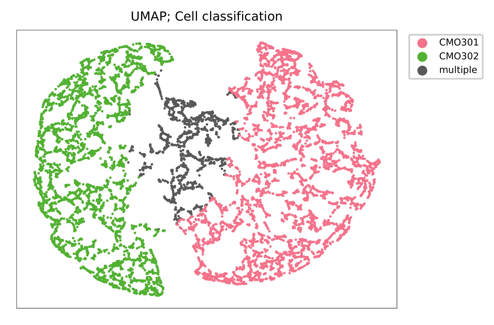{kind=link}
Preview the demultiplexing result: the numbers of singlets (5,614 + 4,712), multiplets (1,505) and negative cells (1,781).
In [1]: import pandas as pd
In [2]: m = pd.read_csv("demultiplexed/matrix_cell_identity.csv.gz", index_col=0)
In [3]: m.loc[:, m.sum(axis=0) == 1].sum(axis=1)
Out[3]:
CMO301 5614
CMO302 4712
dtype: int64
In [4]: [sum(m.sum(axis=0) == i) for i in (2, 0)]
Out[4]: [1505, 1781]
Knee point#
Method 1#
Cells are demultiplexed based on the abundance of features, specifically
CMOs. Demultiplexing method 5-2019 is our previous implementation,
which aims to identify perturbations in the cells by detecting an
inflection point on the feature UMI saturation curve (Xie, S., et al.
2019).
$ fba demultiplex \
-i matrix_featurecount.csv.gz \
-dm 5-2019 \
-v
2022-01-02 13:52:10,698 - fba.__main__ - INFO - fba version: 0.0.x
2022-01-02 13:52:10,698 - fba.__main__ - INFO - Initiating logging ...
2022-01-02 13:52:10,698 - fba.__main__ - INFO - Python version: 3.9
2022-01-02 13:52:10,698 - fba.__main__ - INFO - Using demultiplex subcommand ...
2022-01-02 13:52:13,179 - fba.__main__ - INFO - Skipping arguments: "-q/--quantile", "-cm/--clustering_method", "-p/--prob"
2022-01-02 13:52:13,179 - fba.demultiplex - INFO - Output directory: demultiplexed
2022-01-02 13:52:13,179 - fba.demultiplex - INFO - Demultiplexing method: 5-2019
2022-01-02 13:52:13,179 - fba.demultiplex - INFO - UMI normalization method: clr
2022-01-02 13:52:13,179 - fba.demultiplex - INFO - Visualization: On
2022-01-02 13:52:13,179 - fba.demultiplex - INFO - Visualization method: tsne
2022-01-02 13:52:13,179 - fba.demultiplex - INFO - Loading feature count matrix: matrix_featurecount_filtered.csv.gz ...
2022-01-02 13:52:13,308 - fba.demultiplex - INFO - Number of cells: 13,612
2022-01-02 13:52:13,308 - fba.demultiplex - INFO - Number of positive cells for a feature to be included: 200
2022-01-02 13:52:13,328 - fba.demultiplex - INFO - Number of features: 2 / 2 (after filtering / original in the matrix)
2022-01-02 13:52:13,328 - fba.demultiplex - INFO - Features: CMO301 CMO302
2022-01-02 13:52:13,328 - fba.demultiplex - INFO - Total UMIs: 121,595,388 / 121,595,388
2022-01-02 13:52:13,338 - fba.demultiplex - INFO - Median number of UMIs per cell: 7,659.0 / 7,659.0
2022-01-02 13:52:13,338 - fba.demultiplex - INFO - Demultiplexing ...
2022-01-02 13:52:14,446 - fba.demultiplex - INFO - Generating heatmap ...
2022-01-02 13:52:15,784 - fba.demultiplex - INFO - Embedding ...
2022-01-02 13:52:32,821 - fba.__main__ - INFO - Done.
Heatmap of the relative abundance of features (CMOs) across all cells. Each column represents a single cell.
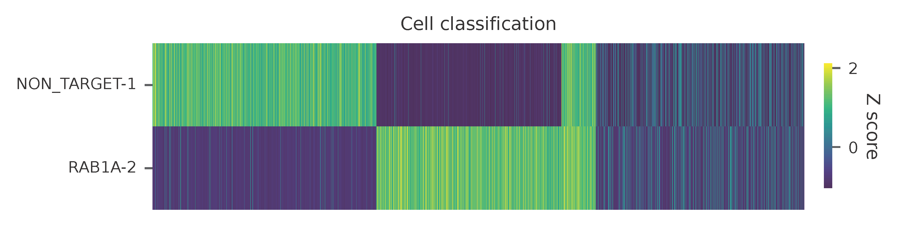{kind=link}
t-SNE embedding of cells based on the abundance of features (CMOs, no transcriptome information used). Colors indicate the CMO status for each cell, as called by FBA.
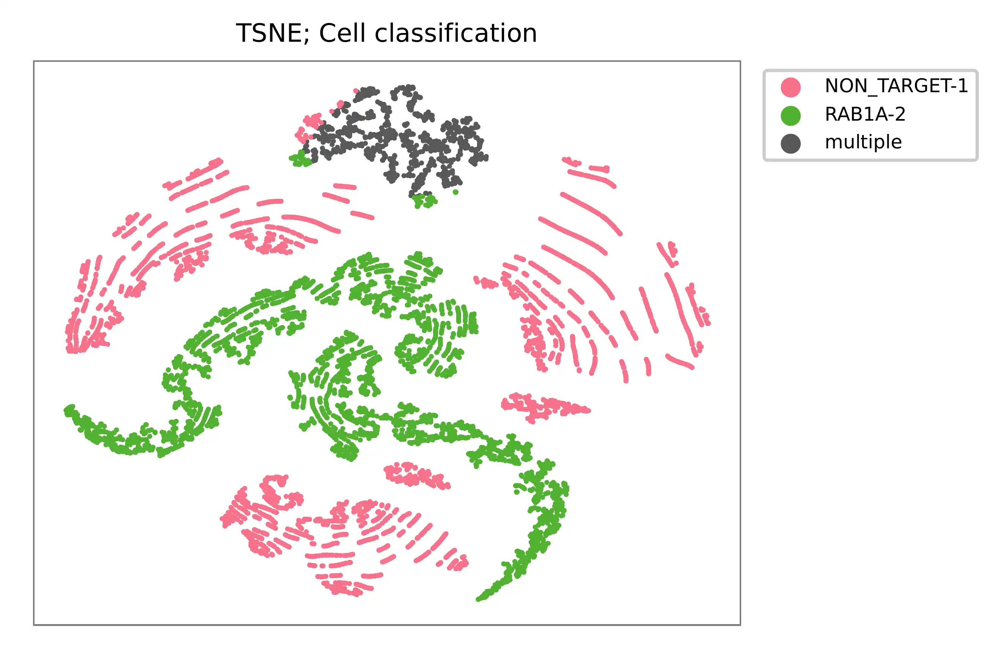{kind=link}
UMI distribution and knee point detection:
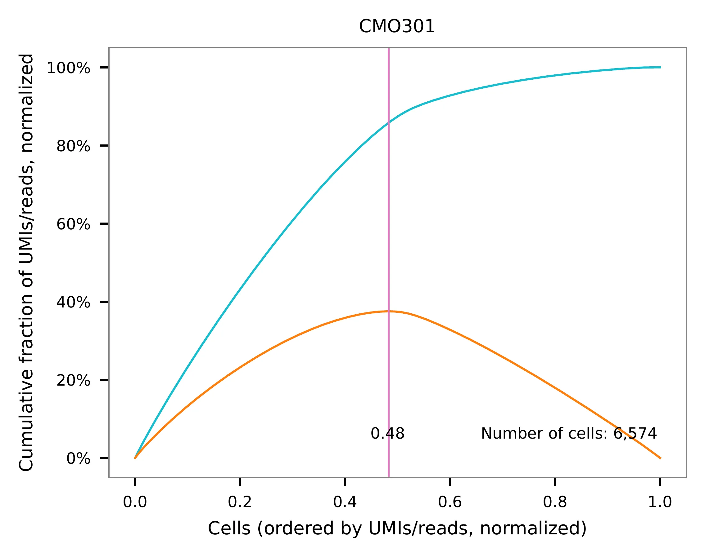 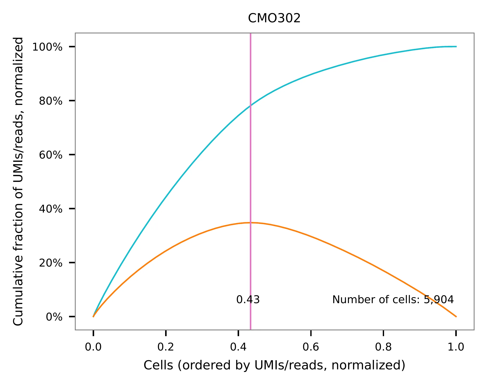{kind=link}
{kind=link}
Preview the demultiplexing result: the numbers of singlets, multiplets and negative cells.
In [1]: import pandas as pd
In [2]: m = pd.read_csv("demultiplexed/matrix_cell_identity.csv.gz", index_col=0)
In [3]: m.loc[:, m.sum(axis=0) == 1].sum(axis=1)
Out[3]:
CMO301 4824
CMO302 4147
dtype: int64
In [4]: [sum(m.sum(axis=0) == i) for i in (2, 0)]
Out[4]: [716, 3925]
Method 2#
Cells are demultiplexed based on the abundance of features, specifically
CMOs. Demultiplexing method 5 is implemented to use the local maxima
on the difference curve to detemine the knee point on the UMI saturation
curve.
$ fba demultiplex \
-i matrix_featurecount.csv.gz \
-dm 5 \
-v
2022-01-02 13:53:33,250 - fba.__main__ - INFO - fba version: 0.0.x
2022-01-02 13:53:33,250 - fba.__main__ - INFO - Initiating logging ...
2022-01-02 13:53:33,250 - fba.__main__ - INFO - Python version: 3.9
2022-01-02 13:53:33,250 - fba.__main__ - INFO - Using demultiplex subcommand ...
2022-01-02 13:53:35,723 - fba.__main__ - INFO - Skipping arguments: "-q/--quantile", "-cm/--clustering_method", "-p/--prob"
2022-01-02 13:53:35,723 - fba.demultiplex - INFO - Output directory: demultiplexed
2022-01-02 13:53:35,723 - fba.demultiplex - INFO - Demultiplexing method: 5
2022-01-02 13:53:35,723 - fba.demultiplex - INFO - UMI normalization method: clr
2022-01-02 13:53:35,723 - fba.demultiplex - INFO - Visualization: On
2022-01-02 13:53:35,724 - fba.demultiplex - INFO - Visualization method: tsne
2022-01-02 13:53:35,724 - fba.demultiplex - INFO - Loading feature count matrix: matrix_featurecount_filtered.csv.gz ...
2022-01-02 13:53:35,852 - fba.demultiplex - INFO - Number of cells: 13,612
2022-01-02 13:53:35,852 - fba.demultiplex - INFO - Number of positive cells for a feature to be included: 200
2022-01-02 13:53:35,872 - fba.demultiplex - INFO - Number of features: 2 / 2 (after filtering / original in the matrix)
2022-01-02 13:53:35,872 - fba.demultiplex - INFO - Features: CMO301 CMO302
2022-01-02 13:53:35,872 - fba.demultiplex - INFO - Total UMIs: 121,595,388 / 121,595,388
2022-01-02 13:53:35,883 - fba.demultiplex - INFO - Median number of UMIs per cell: 7,659.0 / 7,659.0
2022-01-02 13:53:35,883 - fba.demultiplex - INFO - Demultiplexing ...
2022-01-02 13:53:36,435 - fba.demultiplex - INFO - Generating heatmap ...
2022-01-02 13:53:37,779 - fba.demultiplex - INFO - Embedding ...
2022-01-02 13:53:56,162 - fba.__main__ - INFO - Done.
Heatmap of the relative abundance of features (CMOs) across all cells. Each column represents a single cell.
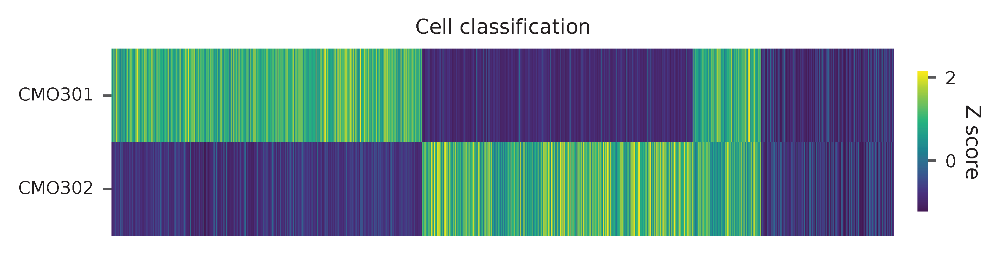{kind=link}
t-SNE embedding of cells based on the abundance of features (CMOs, no transcriptome information used). Colors indicate the CMO status for each cell, as called by FBA.
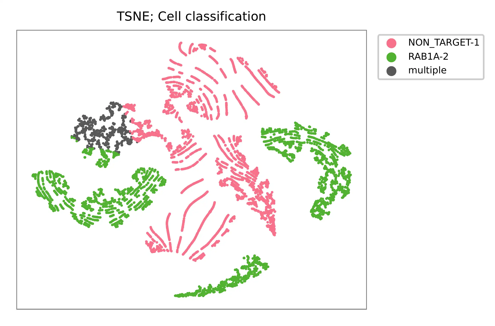{kind=link}
UMI distribution and knee point detection:
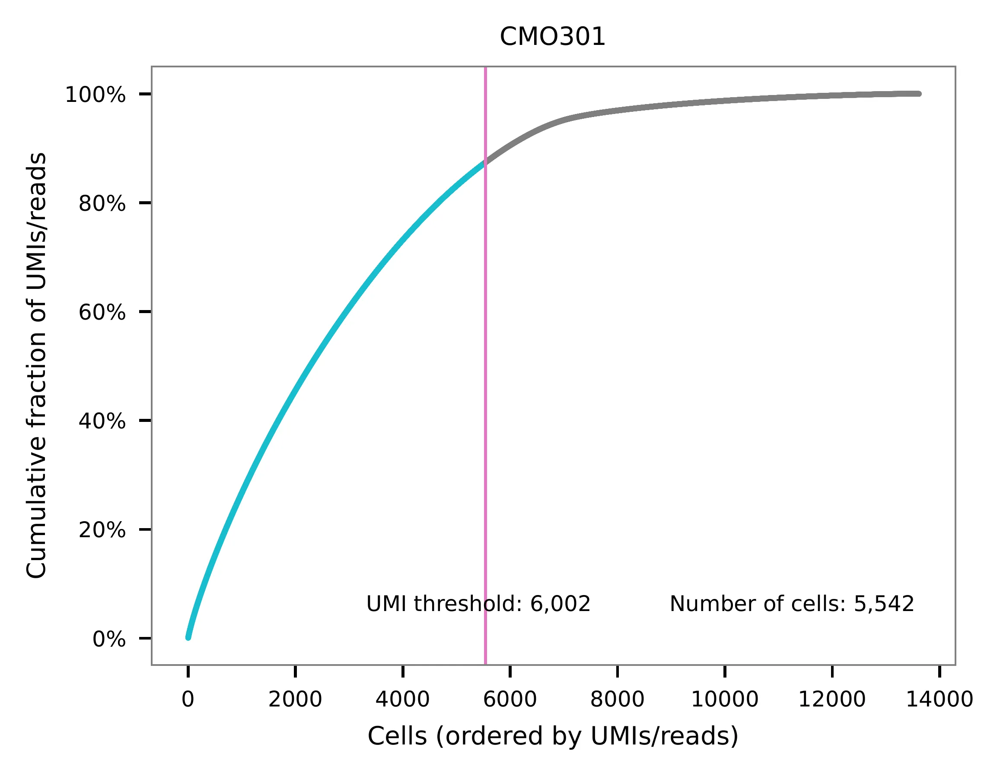 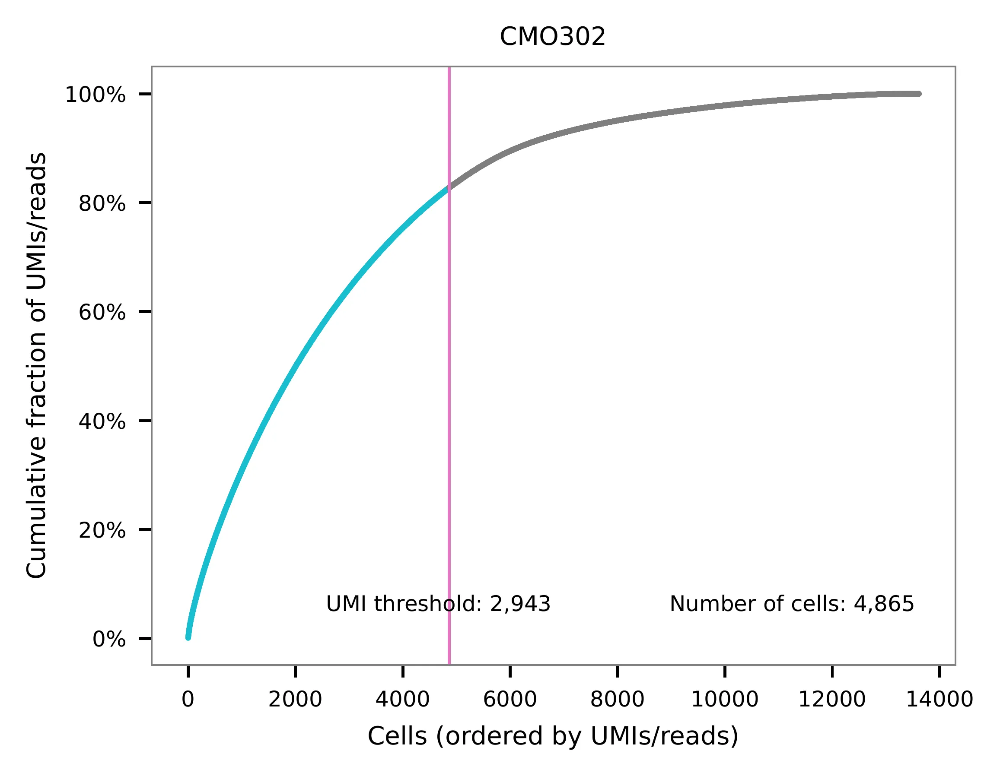{kind=link}
{kind=link}
Preview the demultiplexing result: the numbers of singlets (5,396 + 4,726), multiplets (1,178) and negative cells (2,312).
In [1]: import pandas as pd
In [2]: m = pd.read_csv("demultiplexed/matrix_cell_identity.csv.gz", index_col=0)
In [3]: m.loc[:, m.sum(axis=0) == 1].sum(axis=1)
Out[3]:
CMO301 5396
CMO302 4726
dtype: int64
In [4]: [sum(m.sum(axis=0) == i) for i in (2, 0)]
Out[4]: [1178, 2312]